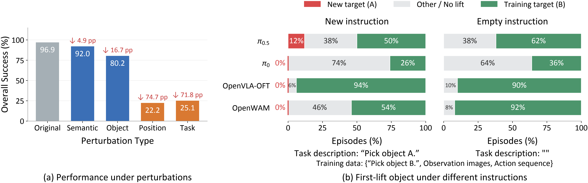
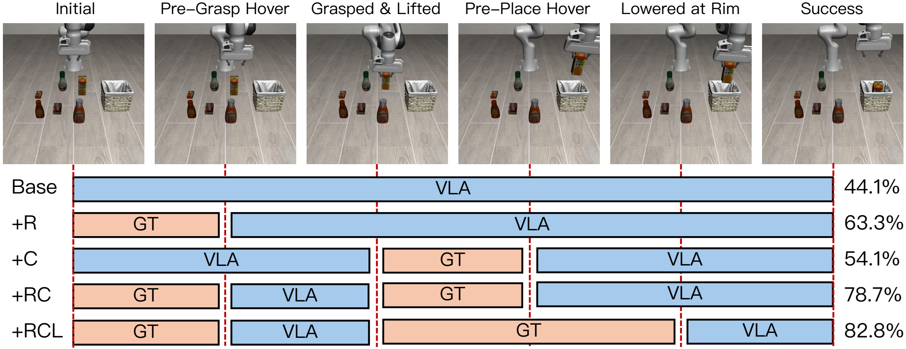
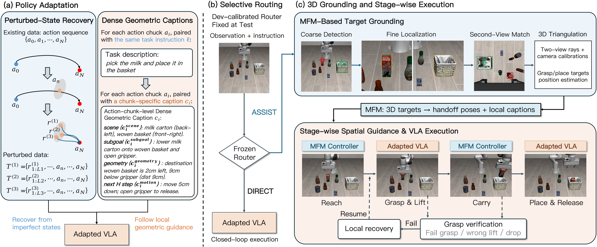
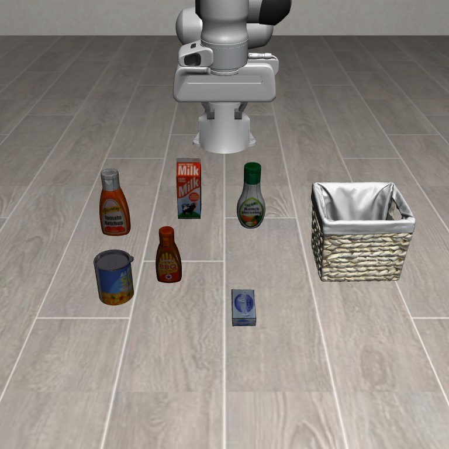
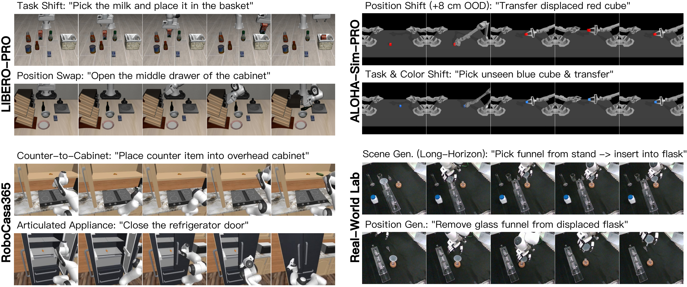
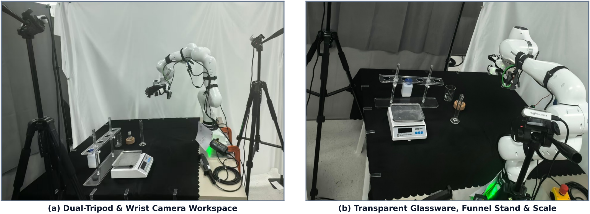
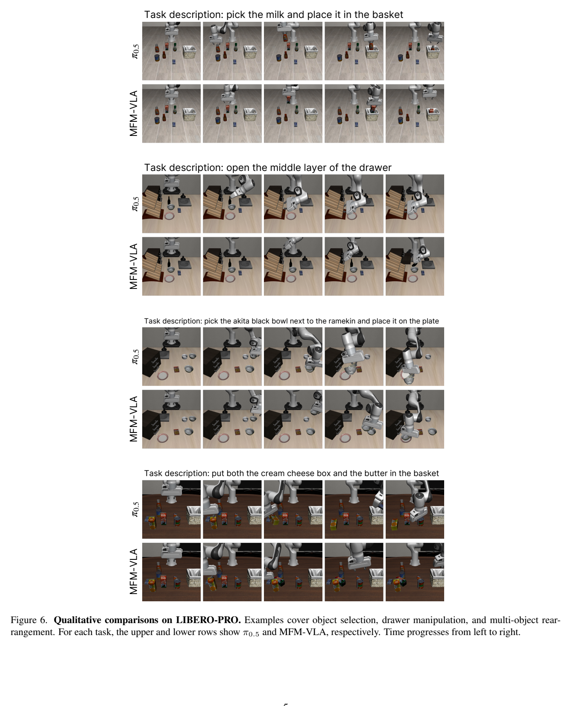
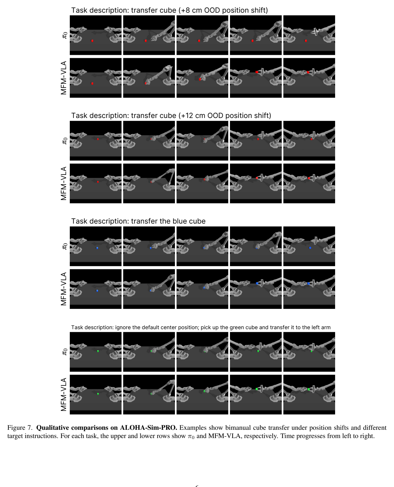
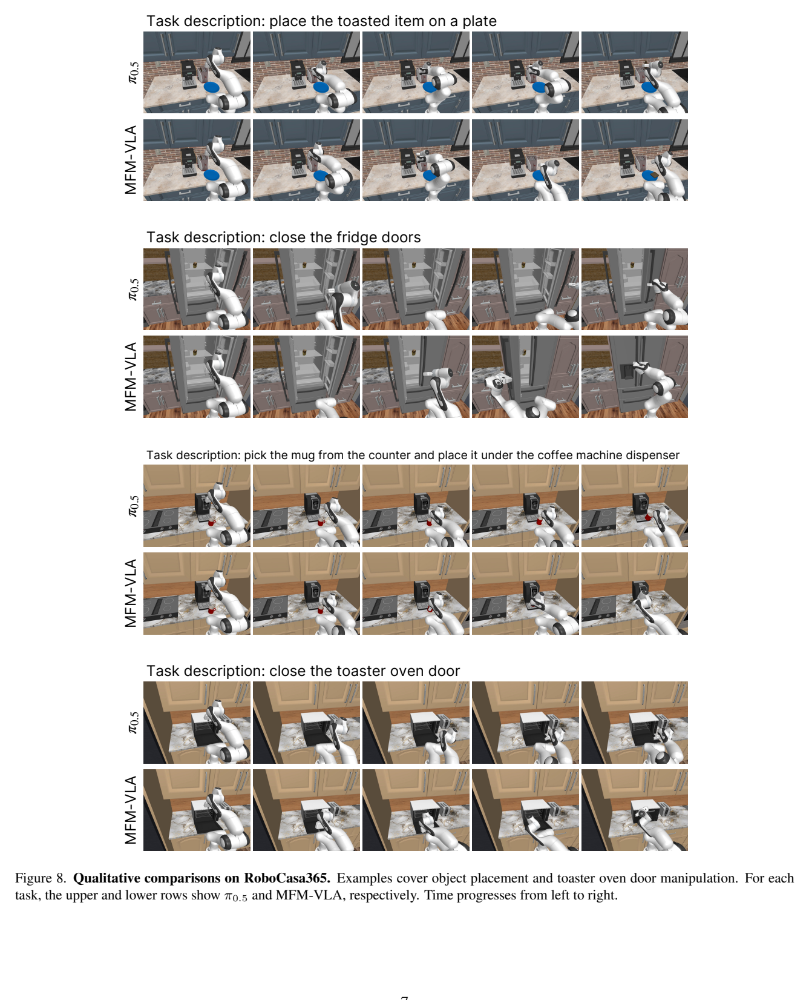
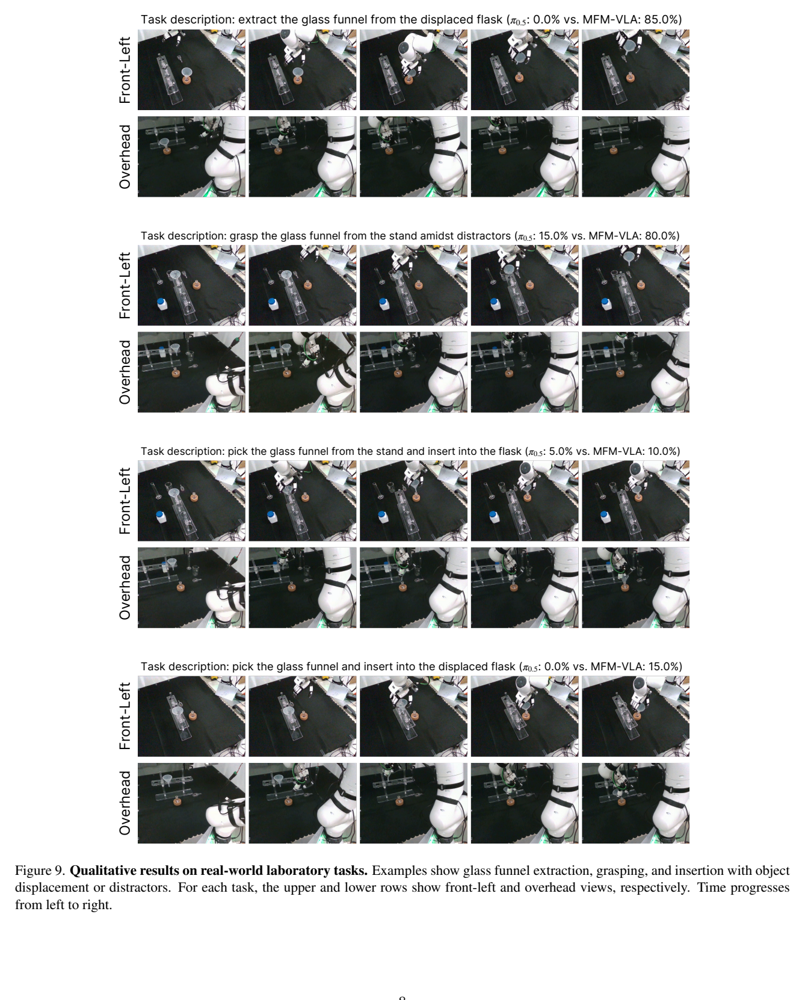

Multimodal foundation models localize task-aware 3D targets from calibrated RGB views and guide free-space motion, while adapted VLA policies retain closed-loop control over contact-rich manipulation.
{zgt,wangshaoxuan,yyhappier,tangzhipeng}@mail.ustc.edu.cn,
{dengjj,yanyongz}@ustc.edu.cn
Vision-Language-Action (VLA) models effectively learn action policies from robot demonstrations, but struggle to generalize to changes in object positions and task goals. General multimodal foundation models (MFMs) offer complementary scene understanding and spatial reasoning, yet remain slow and unreliable for direct fine-grained contact control.
To understand how MFMs can improve VLA spatial generalization, we conduct a systematic capability analysis across four VLA/WAM architectures (\(\pi_{0.5}\), \(\pi_0\), OpenVLA-OFT, and OpenWAM) using counterfactual instruction tests and atomic-stage interventions. We uncover pervasive visual scene shortcuts—pretrained policies frequently retrieve memorized training targets even under updated or empty instructions—and show that failures stem primarily from target grounding and global spatial routing, while local manipulation skills remain largely usable once the robot reaches the right target region.
Based on these findings, we propose MFM-VLA, a selective collaboration framework in which an MFM provides depth-free 3D target grounding and spatial guidance, controllers execute free-space motion, and the VLA retains closed-loop control over fine-grained manipulation. We fine-tune the VLA with action-chunk-level Dense Geometric Captions (DGC) and perturbed-state recovery data to improve local guidance following, paired with a development-calibrated capability router to avoid unnecessary intervention. Across LIBERO-PRO, ALOHA-Sim-PRO, RoboCasa365, and real-world chemistry tasks, MFM-VLA improves success rates by 14.9, 74.0, 3.6, and 30.9 percentage points over the corresponding base VLAs, respectively.

Decoupling target identification, free-space transport, and contact execution across \(\pi_{0.5}\), \(\pi_0\), OpenVLA-OFT, and OpenWAM isolates the exact division of labor needed.
Under Task perturbations—keeping the scene fixed while instructing a new target \(o_{\mathrm{new}}\)—pretrained VLAs rarely fail from unstable grasping; instead, they reliably lift the original training target \(o_{\mathrm{train}}\).
Even when given an empty string \(\ell_\emptyset=\texttt{""}\), OpenVLA-OFT and OpenWAM lift \(o_{\mathrm{train}}\) in 90.0% and 92.0% of episodes, with a 96.0% Same-Lift Rate against updated instructions (\(\pi_{0.5}\): 90.0% on LIBERO-10; \(\pi_0\): 86.0% on ALOHA-Sim).
Our five-level Phase-Decoupled Intervention Staircase (PDIS) injects ground-truth spatial guidance into Reach (\(\texttt{+R}\)), Carry (\(\texttt{+C}\)), both (\(\texttt{+RC}\)), and Lower/Place (\(\texttt{+RCL}\)) over 390 perturbed episodes with frozen VLA weights.
Assisting Reach alone boosts \(\pi_{0.5}\)’s target-lifting rate from 42.3% → 93.1% (Position) and 40.0% → 91.5% (Task), while Reach + Carry (\(\texttt{+RC}\)) raises task success from 13.8% → 68.5% and 20.0% → 77.7%. In contrast, zero-shot GPT-6 Astra waypoint control gets only 3.5% success due to contact and release failures.

| Architecture | Split | Base | +R | +C | +RC | +RCL |
|---|---|---|---|---|---|---|
| \(\pi_{0.5}\) | Overall | 44.1 | 63.3 | 54.1 | 78.7 | 82.8 |
| \(\pi_{0.5}\) | Position | 13.8 | 42.3 | 43.1 | 68.5 | 71.5 |
| \(\pi_{0.5}\) | Task | 20.0 | 57.7 | 27.7 | 77.7 | 86.9 |
| \(\pi_0\) | Overall | 30.8 | 32.1 | 35.6 | 53.1 | 54.4 |
| OpenVLA-OFT | Overall | 37.2 | 44.1 | 39.0 | 65.1 | 66.4 |
| OpenWAM | Overall | 45.4 | 59.2 | 40.8 | 57.7 | 56.4 |
Connecting sparse MFM spatial reasoning with closed-loop VLA contact control purely from calibrated RGB cameras.

Action-Chunk Dense Geometric Caption (\(c_i\)): Encodes structured scene,
subgoal, target-relative geometry
(\(\Delta p_i = \hat{p}_{\mathrm{active}} - p_i^{\mathrm{eef}}\)), and next-\(H\)-step motion primitives,
co-trained over \(\{\ell,\,[\ell; c_i],\,c_i\}\) so one policy supports both unassisted and guided execution.
Frozen Capability Router (\(R(\tau)\)): Calibrated once on \(K{=}5\) development seeds per task and frozen before evaluation, invoking MFM assistance on only 31.2% of LIBERO-PRO episodes (5 of 16 suites).
Demonstrations are augmented with controller-recorded perturbed-state recovery segments \(\mathcal{T}^{(k)}=\{r_1^{(k)},\dots,r_{L_k}^{(k)}, a_n,\dots,a_N\}\) and chunk-level Dense Geometric Captions, enabling reliable handoff entry into local manipulation basins.
Uniform MFM intervention degrades suites the VLA already solves well. Freezing \(R(\tau)\) from paired Direct vs. Assisted development rollouts preserves zero-query VLA speed and fidelity whenever external routing is unneeded.
GPT-6 Astra grounds manipulation-specific points across two calibrated RGB views for 3D ray triangulation (\(\hat{p}_{\mathrm{grasp}}, \hat{p}_{\mathrm{place}}\)), paired with Watch-and-Takeover carry (\(W_0{=}20\) steps, \(3\,\mathrm{cm}\) progress gate) and bounded grasp retries.
libero_object_task (Task 5, Init 18) · Click frame to zoom

Each simulation pair rolls out from the exact same initial scene and random seed, comparing the standalone base VLA (left) against MFM-VLA (right). Play, pause, seek, and replay stay locked in sync.
Evaluated across 8,000 episodes on LIBERO-PRO, 250 episodes on ALOHA-Sim-PRO, and 2,500 episodes per method on RoboCasa365.
| Split | Method | Sem. | Obj. | Pos. | Task | Overall |
|---|---|---|---|---|---|---|
| Test (7,200) | Base \(\pi_{0.5}\) | 91.7 | 80.2 | 22.1 | 25.1 | 54.8 |
| Test (7,200) | + MFM-VLA (Ours) | 95.4 | 83.8 | 46.8 | 51.2 | 69.3 |
| Test (7,200) | + MFM-VLA + Code Policy | 96.7 | 87.9 | 79.2 | 70.9 | 83.7 |
| Full (8,000) | Base \(\pi_{0.5}\) | 92.0 | 80.2 | 22.2 | 25.2 | 54.9 |
| Full (8,000) | + MFM-VLA (Ours) | 95.4 | 83.8 | 47.5 | 52.6 | 69.8 |
| Full (8,000) | + MFM-VLA + Code Policy | 96.8 | 88.1 | 80.5 | 72.1 | 84.4 |
| Method | Horizon | \(N\) | Sem. | Pos. | Task | Overall |
|---|---|---|---|---|---|---|
| GPT-6 Astra (direct) | \(1\times\) | 171 | 6.9 | 1.8 | 1.8 | 3.5 |
| Base \(\pi_{0.5}\) | \(1\times\) | 171 | 96.6 | 14.3 | 24.6 | 45.6 |
| MFM-VLA (Ours) | \(1\times\) | 171 | 93.1 | 55.4 | 73.7 | 74.3 |
| GPT-6 Astra (direct) | \(3\times\) | 179 | 10.2 | 10.0 | 6.7 | 8.9 |
| Base \(\pi_{0.5}\) | \(3\times\) | 179 | 96.6 | 15.0 | 25.0 | 45.3 |
| MFM-VLA (Ours) | \(3\times\) | 179 | 93.2 | 55.0 | 73.3 | 73.7 |
| Method | Orig. | Sem. | Obj. | Pos. | Task | Pert. Avg. |
|---|---|---|---|---|---|---|
| \(\pi_0\) | 70.0 | 40.0 | 54.0 | 0.0 | 0.0 | 23.5 |
| DOT Policy | 88.0 | 88.0 | 16.0 | 2.0 | 0.0 | 26.5 |
| Diffusion Policy | 92.0 | 92.0 | 42.0 | 4.0 | 0.0 | 34.5 |
| ACT | 86.0 | 86.0 | 80.0 | 2.0 | 0.0 | 42.0 |
| \(\pi_0\) + MFM-VLA (Ours) | 100.0 | 100.0 | 98.0 | 92.0 | 100.0 | 97.5 |
| Method | Atomic | Comp.-Seen | Comp.-Unseen | Overall |
|---|---|---|---|---|
| Diffusion Policy | 15.7 | 0.2 | 1.3 | 6.1 |
| \(\pi_0\) | 34.6 | 6.1 | 1.1 | 14.8 |
| \(\pi_{0.5}\) | 39.6 | 7.1 | 1.2 | 16.9 |
| \(\pi_{0.5}\) + MFM-VLA (Ours) | 39.3 | 17.1 | 2.4 | 20.5 |
| + MFM-VLA + Code Policy | 51.8 | 18.1 | 18.3 | 30.3 |

Standard depth cameras fail on clear borosilicate glassware due to refraction and specular reflections. MFM-VLA triangulates 3D targets purely from calibrated fixed and wrist RGB views on a 7-DoF Franka arm with a 12-DoF XHand.

| Method | Pick Beaker | Pick Cylinder | Balance | Place | Pick Funnel | Remove Funnel | Place Funnel | Return Funnel | Atomic Avg. | Mid Balance | Place Funnel | Return Funnel | Multi Avg. |
|---|---|---|---|---|---|---|---|---|---|---|---|---|---|
| Standalone \(\pi_{0.5}\) | 0.0 / 0.0 | 0.0 / 0.0 | 85.0 / 25.0 | 0.0 / 45.0 | 15.0 / 0.0 | 30.0 / 0.0 | 15.0 / 0.0 | 30.0 / 0.0 | 15.3 | 0.0 / 0.0 | 5.0 / 0.0 | 0.0 / 0.0 | 0.8 |
| \(\pi_{0.5}\) + MFM-VLA (Ours) | 80.0 / 90.0 | 0.0 / 30.0 | 95.0 / 40.0 | 10.0 / 50.0 | 80.0 / 75.0 | 95.0 / 85.0 | 40.0 / 30.0 | 25.0 / 45.0 | 54.4 | 80.0 / 55.0 | 10.0 / 15.0 | 15.0 / 15.0 | 31.7 |
Controlled ablations on the 800-episode held-out LIBERO-PRO split (init 5–9:
550 Direct + 250 Assisted episodes).
| Policy | Router | Sem. | Obj. | Pos. | Task | Overall |
|---|---|---|---|---|---|---|
| Base \(\pi_{0.5}\) | No | 92.5 | 81.0 | 20.5 | 28.0 | 55.5 |
| Base \(\pi_{0.5}\) | Always | 66.0 | 50.0 | 37.5 | 58.0 | 52.9 |
| Adapted \(\pi_{0.5}\) | No | 95.5 | 85.0 | 39.5 | 30.5 | 62.6 |
| Base \(\pi_{0.5}\) | Yes | 92.5 | 81.0 | 41.5 | 57.0 | 68.0 |
| Adapted \(\pi_{0.5}\) (w/o DGC) | Yes | 95.5 | 81.0 | 54.5 | 56.5 | 71.9 |
| Adapted \(\pi_{0.5}\) (Full MFM-VLA) | Yes | 95.5 | 85.0 | 56.5 | 63.5 | 75.1 |
| MFM Backbone | \(e_{xy}\) (cm) ↓ | ≤6 cm (%) ↑ | Assisted (%) | Overall (%) |
|---|---|---|---|---|
| Kimi K3 | 22.94 | 8.7 | 29.6 | 61.4 |
| Qwen3-VL-30B | 2.25 | 63.0 | 38.0 | 64.0 |
| Gemini 4 Argon | 2.75 | 76.1 | 58.4 | 70.4 |
| Grok 4.7 | 0.92 | 91.3 | 59.2 | 70.6 |
| GPT-5.6 | 0.57 | 93.5 | 60.4 | 71.0 |
| GPT-6 Astra (Default) | 0.16 | 97.3 | 73.6 | 75.1 |
| Strategy | Success (%) | MFM Calls (%) |
|---|---|---|
| All Direct | 62.6 | 0.0 |
| All Guided | 62.3 | 100.0 |
| Perturbation-level | 74.1 | 50.0 |
| Suite-level (Default) | 75.1 | 31.2 |
| Task-level | 78.5 | 27.5 |
| Variant | Assisted | Overall |
|---|---|---|
| Adapted Direct | 33.6 | 62.6 |
| Single-view grounding | 45.6 | 66.4 |
| w/o Carry guidance | 62.0 | 71.5 |
| w/o Grasp retries | 69.2 | 73.8 |
| Full MFM-VLA | 73.6 | 75.1 |
| Method | SR ↑ | Lift \(o_{\mathrm{new}}\) ↑ | Lift \(o_{\mathrm{train}}\) ↓ |
|---|---|---|---|
| Base \(\pi_{0.5}\) | 22.5 | 33.0 | 40.0 |
| Adapted Direct | 27.5 | 35.0 | 35.5 |
| Base + Guidance | 61.0 | 75.5 | 8.5 |
| MFM-VLA | 73.5 | 81.5 | 2.5 |
Replacing two-view ray triangulation with single-view grounding reduces Assisted success from 73.6% → 45.6%. On the counterfactual Task-shift re-audit (Table 10), MFM-VLA boosts instructed-target lifting from 33.0% → 81.5% while cutting memorized training-target lifting from 40.0% → 2.5%.
| 3D Grounding Module | Verification / Retry Setting | \(e_{xy}\) (cm) ↓ | ≤6 cm (%) ↑ | Assisted (%) | Overall (%) |
|---|---|---|---|---|---|
| GroundingDINO (top-edge) | No MFM verify (proprio. only) | 11.97 | 20.9 | 10.0 | 55.3 |
| GroundingDINO (box center) | No MFM verify (proprio. only) | 9.04 | 49.1 | 16.4 | 57.3 |
| GroundingDINO (box center) | Live MFM visual (Qwen3-VL-30B) | 9.04 | 49.1 | 17.2 | 57.5 |
| GroundingDINO (box center) | Sim target-ID oracle | 9.04 | 49.1 | 17.2 | 57.5 |
| GPT-6 Astra | Visual verify, no retry (\(M_{\mathrm{retry}}{=}0\)) | 0.16 | 97.3 | 69.2 | 73.8 |
| GPT-6 Astra | Visual verify + bounded retry (\(M_{\mathrm{retry}}{=}2\)) | 0.16 | 97.3 | 73.6 | 75.1 |
Adding live MFM verification or even a simulation target-ID oracle to GroundingDINO lifts Assisted success only from 16.4% → 17.2%, confirming that post-grasp verification cannot compensate for inaccurate manipulation-point grounding, whereas upgrading 3D grounding to GPT-6 Astra lifts Assisted success to 69.2% (\(M_{\mathrm{retry}}{=}0\)) and 73.6% (\(M_{\mathrm{retry}}{=}2\)).
| Budget \(K\) | Suite SR (%) | Suite Call (%) | Task SR (%) | Task Call (%) |
|---|---|---|---|---|
| \(K{=}1\) | 75.1±0.2 | 28.8 | 74.6±0.9 | 18.2 |
| \(K{=}2\) | 75.2±0.2 | 28.1 | 76.1±0.9 | 22.6 |
| \(K{=}3\) | 75.2±0.1 | 28.8 | 77.1±0.7 | 25.0 |
| \(K{=}4\) | 75.2±0.1 | 30.0 | 78.0±0.4 | 26.9 |
| \(K{=}5\) (Default) | 75.1 | 31.2 | 78.5 | 27.5 |
| Method | Sem. | Obj. | Pos. | Task | Overall |
|---|---|---|---|---|---|
| Base \(\pi_{0.5}\) | 93.7±1.3 | 82.3±0.9 | 25.5±3.5 | 25.5±1.8 | 56.8±0.9 |
| MFM-VLA | 93.5±2.2 | 82.8±1.7 | 53.3±2.5 | 59.5±3.1 | 72.3±2.0 |




@article{zheng2026mfmvla,
title = {Ground, Guide, Act: Improving VLA Spatial Generalization with Multimodal Foundation Models},
author = {Zheng, Guangting and Wang, Shaoxuan and Yuan, Yu and Tang, Zhipeng and Deng, Jiajun and Zhang, Yanyong},
journal = {arXiv preprint arXiv:2611.31452},
year = {2026},
url = {https://arxiv.org/abs/2611.31452}
}
Correspondence & inquiries: zgt@mail.ustc.edu.cn · arXiv: 2611.31452 · Code: github.com/Tom-zgt/MFM-VLA · Checkpoints: huggingface.co/zhengzhou/MFM-VLA